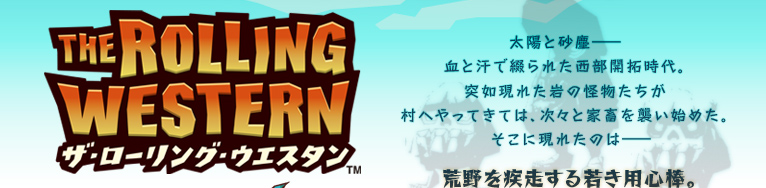
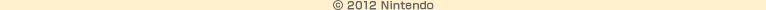

ニンテンドー3DSダウンロードソフト『ザ・ローリング・ウエスタン』は、独特の世界観がひときわ目を引く新しいタイプのゲームです。タッチペンでさまざまな技をくり出し敵を倒す「アクション」と、各マップでどのタワーにどの武器をセットするかの戦略を考える「タワーディフェンス」の要素がひとつになった、「アクションタワーディフェンス」のシステムが特徴的です。
今月のN.O.Mでは、まずこの『ザ・ローリング・ウエスタン』がどんなゲームなのか、プレイレポートで詳しくご紹介します。また、ほかでは聞くことができない開発中の裏話や開発スタッフからのコメントなども合わせて、たっぷりお届けします。
